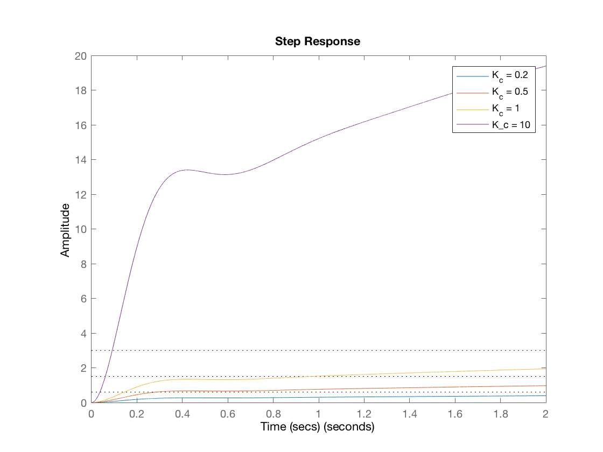
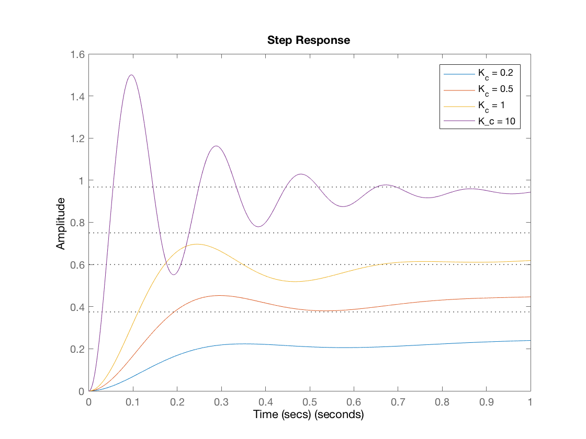

s = tf('s')
Gp = 3 * 100 * (s + 1) / (3*s + 1) / (s^2 + 10*s + 100)
Kc = [0.2, 0.5, 1, 10]
figure(1)
hold
for n = 1:4
step(Kc(n) * Gp, 0:.0001:2)
legend('K_c = 0.2', 'K_c = 0.5', 'K_c = 1', 'K_c = 10')
title('Step Response');
xlabel('Time (secs)');
ylabel('Amplitude');
[Y,T] = step(Kc(n) * Gp,0:.0001:2);
stepinfo(Y,T)
end
hold
figure(2)
hold
for n = 1:4
step(feedback(Kc(n) * Gp, 1),0:.0001:1)
title('Step Response');
xlabel('Time (secs)');
ylabel('Amplitude');
legend('K_c = 0.2', 'K_c = 0.5', 'K_c = 1', 'K_c = 10')
[Y,T] = step(feedback(Kc(n) * Gp, 1),0:.0001:20);
stepinfo(Y,T)
end
hold
s =
s
Continuous-time transfer function.
Gp =
300 s + 300
----------------------------
3 s^3 + 31 s^2 + 310 s + 100
Continuous-time transfer function.
Kc =
0.2000 0.5000 1.0000 10.0000
Current plot held
Warning: Ignoring extra legend entries.
ans =
RiseTime: 1.4277
SettlingTime: 1.8921
SettlingMin: 0.3490
SettlingMax: 0.3878
Overshoot: 0
Undershoot: 0
Peak: 0.3878
PeakTime: 2
Warning: Ignoring extra legend entries.
ans =
RiseTime: 1.4277
SettlingTime: 1.8921
SettlingMin: 0.8726
SettlingMax: 0.9695
Overshoot: 0
Undershoot: 0
Peak: 0.9695
PeakTime: 2
Warning: Ignoring extra legend entries.
ans =
RiseTime: 1.4277
SettlingTime: 1.8921
SettlingMin: 1.7451
SettlingMax: 1.9390
Overshoot: 0
Undershoot: 0
Peak: 1.9390
PeakTime: 2
ans =
RiseTime: 1.4277
SettlingTime: 1.8921
SettlingMin: 17.4514
SettlingMax: 19.3900
Overshoot: 0
Undershoot: 0
Peak: 19.3900
PeakTime: 2
Current plot released
Current plot held
Warning: Ignoring extra legend entries.
ans =
RiseTime: 3.8164
SettlingTime: 7.4673
SettlingMin: 0.3375
SettlingMax: 0.3750
Overshoot: 0
Undershoot: 0
Peak: 0.3750
PeakTime: 20
Warning: Ignoring extra legend entries.
ans =
RiseTime: 2.6224
SettlingTime: 5.5310
SettlingMin: 0.5400
SettlingMax: 0.6000
Overshoot: 0
Undershoot: 0
Peak: 0.6000
PeakTime: 20
Warning: Ignoring extra legend entries.
ans =
RiseTime: 0.1671
SettlingTime: 4.1498
SettlingMin: 0.5188
SettlingMax: 0.7500
Overshoot: 0
Undershoot: 0
Peak: 0.7500
PeakTime: 20
ans =
RiseTime: 0.0361
SettlingTime: 1.1887
SettlingMin: 0.5513
SettlingMax: 1.5001
Overshoot: 55.0140
Undershoot: 0
Peak: 1.5001
PeakTime: 0.0961
Current plot released
 